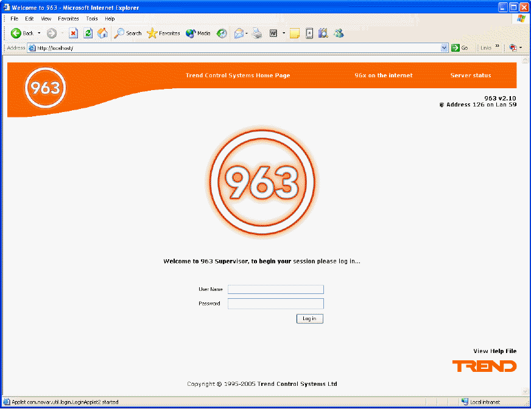

Il est possible de se connecter au 963 Server à partir de n'importe quel point, à condition d’effectuer une connexion par TCP/IP.
Le 963 Server peut fonctionner selon deux modes, graphique et texte, en fonction du navigateur ou de l'appareil utilisé comme poste client. Les postes clients PC du 963 peuvent avoir n'importe quelle configuration à condition de fonctionner sous le protocole réseau TCP/IP, de faire installer une carte Ethernet et un navigateur Internet. Pour utiliser toutes les possibilités graphiques (mode graphique), il est nécessaire de disposer au minimum de Microsoft Internet Explorer 6, de Netscape version 6.1, de Mozilla version 1.4 (Internet Explorer version 6 minimum recommandé) et de Java runtime environment de SUN, version 1.5. Les autres navigateurs ne pourront fournir qu'un affichage texte (mode texte). Les assistants numériques personnels équipés de Windows Mobile Edition 2 ou d’une version supérieure, le Nokia 9210i et les téléphones multifonctions équipés de Window Mobile 5 ou d’une version supérieure ne disposent que d’un accès en mode texte au serveur.
Veuillez noter que le 963 n'a pas été testé avec l'ensemble des appareils existants et que Trend ne peut garantir la compatibilité du 963 Server avec un appareil en particulier.
Les deux modes présentent des différences.
Pour se connecter au 963 Server :
1 lancez le Navigateur Web ;
2 saisissez l’URL du 963 Server. Si le 963 a été paramétré pour utiliser un port TCP/IP différent du port 80, indiquez le numéro de port en intercalant deux points (« : »"). Exemple : http:// 963:6000.
Ceci correspondra à l'adresse IP ou au nom de l'ordinateur personnel sur lequel fonctionne le 963 Server. La page par défaut ci-dessous du 963 Server s'affiche :

Astuce : il se peut que le technicien ait mis en place un raccourci qui exécute les étapes 1 et 2. Cliquez tout simplement dessus.
Notez que si une autre page s'affiche, c'est que le technicien a conçu l’accès de cette façon ;
3 lorsque vous saisissez un identifiant et un mot de passe valides, une page d'informations doit apparaître.
S’il y a un problème de connexion au 963, un message d’erreur s’affichera ; ce type de message est expliqué dans la section « Messages d’erreur » de ce manuel.
Notez que pour des raisons de sécurité, l'accès à la version sécurisée du 963 Server n'est possible qu'en mode graphique.